경영지도사-1차-1교시(구) (2015-05-16 기출문제)
1과목: 중소기업관련법령
1. 중소기업기본법상 해당기업의 주된 업종별 평균매출액등의 규모가 중소기업에 해당되지 않는 것은?
- 가구 제조업: 1,500억원인 기업
- 음료 제조업: 1,000억원인 기업
- 정보서비스업: 800억원인 기업
- 기술 서비스업: 600억원인 기업
- 교육 서비스업: 400억원인 기업
(정답률: 알수없음)

2. 중소기업기본법상 용어의 뜻으로 옳은 것은?
- 법인인 기업의 “창업일”이란 사업자등록을 한 날을 말한다.
- “친족”이란 배우자, 8촌 이내의 혈족 및 6촌 이내의 인척을 말한다.
- “주식등”이란 주식회사의 경우에는 의결권 없는 주식을 포함하여 발행주식의 총수를 말한다.
- 주식회사에서 “임원”이란 사외이사를 포함하여 등기된 이사를 말한다.
- 주식회사 또는 유한회사 외의 기업에서 “임원”이란 무한책임사원 또는 업무집행자를 말한다.
(정답률: 알수없음)
3. 중소기업기본법의 내용으로 옳은 것은?
- 중소기업에 영향을 주는 기존규제의 정비 및 중소기업 애로사항의 해결을 위하여 중소기업청장 소속으로 중소기업 고충처리위원회를 둔다.
- 정부는 매년 정부와 지방자치단체가 중소기업을 육성하기 위하여 추진할 중소기업시책에 관한 계획을 수립하여 관련 예산과 함께 11월까지 국회에 제출하여야 한다.
- 지방자치단체의 장은 중소기업 지원사업 통합관리시스템을 구축ㆍ운영하여야 한다.
- 중소기업 옴부즈만은 업무에 관한 활동 결과보고서를 작성하여 매년 1월말까지 규제개혁위원회와 국무회의 및 국회에 보고하여야 한다.
- 중소기업시책에 참여하려는 중소기업자는 이 법 제2조에 따른 중소기업자에 해당하는지를 확인할 수 있는 자료를 매년 중소기업중앙회에 제출하여야 한다.
(정답률: 알수없음)
4. 중소기업기본법상 소기업에 해당하는 경우를 모두 고른 것은?
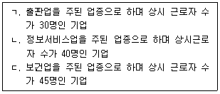
- ㄱ
- ㄱ, ㄴ
- ㄱ, ㄷ
- ㄴ, ㄷ
- ㄱ, ㄴ, ㄷ
(정답률: 알수없음)
5. 중소기업창업 지원법상 창업보육센터사업자의 지정 등에 관한 설명으로 옳은 것은?
- 창업보육센터를 설립ㆍ운영하려는 자는 중소기업청에 신고하여야 한다.
- 창업보육센터를 설립ㆍ운영하려는 자는 5인 이상의 창업자가 사용할 수 있는 500제곱미터 이상의 시설을 갖추어야 한다.
- 지방자치단체는「공유재산 및 물품 관리법」및 그 밖의 다른 법령에도 불구하고 입주자에게 공유재산의 사용료를 대통령령으로 정하는 바에 따라 감면할 수 있다.
- 국가는 창업보육센터에 입주한 자에 대하여 국유재산의 사용료를 감면하여야 한다.
- 창업보육센터사업자로 지정받으려면 경영학분야의 박사학위소지자 2인 이상의 전문인력 확보를 필수요건으로 한다.
(정답률: 알수없음)
6. 중소기업창업 지원법은 창업에 관하여 적용한다. 다음 중 창업에서 제외되는 업종을 모두 고른 것은?
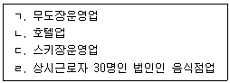
- ㄱ, ㄴ
- ㄱ, ㄷ
- ㄴ, ㄷ
- ㄴ, ㄹ
- ㄱ, ㄴ, ㄷ, ㄹ
(정답률: 알수없음)
7. 중소기업창업 지원법상 창업투자조합의 등록 요건으로 적합한 것은?
- 출자금 총액이 5억원 이상일 것
- 출자 1좌(座)의 금액이 50만원 이상일 것
- 유한책임조합원의 수가 30인 이하일 것
- 존속기간이 5년 이상일 것
- 업무집행조합원의 출자지분이 출자금 총액의 100분의 2 이상일 것
(정답률: 알수없음)
8. 중소기업창업 지원법상 창업절차 등에 관한 설명으로 옳지 않은 것은?
- 창업자는 사업계획을 작성하고, 이에 대한 시장ㆍ군수 또는 구청장(자치구의 구청장)의 승인을 받아 사업을 할 수 있다.
- 시장ㆍ군수 또는 구청장(자치구의 구청장)은 사업계획의 승인을 할 때에는 그 공장의 건축면적이 「산업집적활성화 및 공장설립에 관한 법률」에 따른 기준공장면적률에 적합하도록 하여야 한다.
- 시장ㆍ군수 또는 구청장(자치구의 구청장)은 사업계획의 승인을 받은 자가 사업계획의 승인을 받은 공장용지를 다른 사람에게 임대하는 경우에는 그 승인을 취소할 수 있다.
- 사업계획의 승인을 받은 창업자에 대하여는 사업을 개시한 날부터 5년 동안「농지법」에 따른 농지보전부담금 및「초지법」에 따른 대체초지조성비를 면제한다.
- 관계 행정기관의 장은 사업계획의 승인과 관련되는 사항을 법령으로 제정하는 경우 중소기업청장에게 통보하여야 한다.
(정답률: 알수없음)
9. 중소기업창업 지원법상 중소기업상담회사에 관한 설명으로 옳지 않은 것은?
- 중소기업상담회사는 상법상 주식회사로서 납입자본금이 5천만원 이상이어야 한다.
- 중소기업상담회사가 창업투자회사를 겸업하는 경우에는 법 제32조에 따른 용역 대금의 지원을 받을 수 없다.
- 정당한 사유 없이 약정한 날을 3개월 이상 지난 채무가 1천만원을 초과하는 자는 중소기업상담회사의 임원이 될 수 없다.
- 중소기업상담회사가 등록한 사항 중 회사명을 변경하려는 경우 중소기업청장에게 등록해야 한다.
- 중소기업상담회사는 대통령령으로 정하는 전문인력 및 시설을 보유해야 한다.
(정답률: 알수없음)
10. 중소기업창업 지원법상 창업에 해당하는 것을 모두 고른 것은?
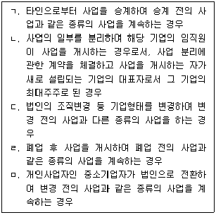
- ㄱ, ㄴ
- ㄱ, ㅁ
- ㄴ, ㄷ
- ㄷ, ㄹ
- ㄹ, ㅁ
(정답률: 알수없음)
11. 벤처기업육성에 관한 특별조치법상 신기술창업전문회사의 기술분야 전문인력 기준으로 옳지 않은 것은?
- 자연과학 분야의 박사학위 소지자
- 국공립연구기관에서 3년 이상 연구를 한 경력이 있는 사람
- 「변리사법」에 따른 변리사
- 「중소기업진흥에 관한 법률」에 따라 등록한 기술지도사
- 「특정연구기관 육성법」의 적용을 받는 특정연구기관에서 5년 이상 연구를 한 경력이 있는 사람
(정답률: 알수없음)
12. 벤처기업육성에 관한 특별조치법상 일부 규정이다. ( )에 들어갈 용어는?
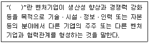
- 협력투자
- 전략적제휴
- 협동화
- 조인트벤처
- 협력적 공생관계
(정답률: 알수없음)
13. 벤처기업육성에 관한 특별조치법상 벤처기업집적 시설에 대하여 면제하는 부담금이 아닌 것은?
- 「개발이익환수에 관한 법률」에 따른 개발부담금
- 「산지관리법」에 따른 대체산림자원조성비
- 「폐기물관리법」에 따른 폐기물처리부담금
- 「도시교통정비 촉진법」에 따른 교통유발부담금
- 「초지법」에 따른 대체초지조성비
(정답률: 알수없음)
14. 벤처기업육성에 관한 특별조치법의 내용으로 옳지 않은 것은?
- 유한회사인 벤처기업의 출자를 인수한 개인투자조합은 그 벤처기업의 정관으로 정하는 바에 따라 그 지분의 전부를 타인에게 양도할 수 있다.
- 유한회사인 벤처기업은 정관에서 정하는 바에 따라 사원총회의 결의로 이익배당에 관한 기준을 따로 정할 수 있다.
- 주식회사인 벤처기업이 간이영업양도를 하는 경우 영업양도ㆍ양수계약서에 영업을 양도하는 회사에 관하여는 주주총회의 승인을 받지 아니하고 벤처기업의 영업의 전부 또는 일부를 양도할 수 있다는 뜻을 적어야 한다.
- 주식회사인 벤처기업이 간이영업양도를 하려고 할 경우, 양도하려는 회사는 영업양도ㆍ양수계약서를 작성한 날로부터 3주 이내에 양도ㆍ양수계약서의 주요 내용을 공고하거나 주주에게 알려야 한다.
- 벤처기업인 유한회사를 설립하려는 자는「상법」에 따른 설립등기의 신청서에 벤처기업확인서를 첨부하여야 한다.
(정답률: 알수없음)
15. 벤처기업육성에 관한 특별조치법상 벤처기업의 주식매수선택권에 관한 설명으로 옳지 않은 것은?
- 주식회사인 벤처기업은 정관이 정하는 바에 따라 이사회의 결의로 벤처기업의 임직원에게 주식매수선택권을 부여할 수 있다.
- 주식매수선택권의 행사로 내줄 주식의 종류와 수는 정관으로 정한다.
- 주식매수선택권을 부여한 벤처기업이 주식매수선택권을 부여받은 자에게 내줄 목적으로 자기주식을 취득하는 경우 발행주식 총수의 100분의 10을 초과할 수 있다.
- 주식매수선택권을 부여받은 자가 사망한 때에는 그 상속인이 이를 부여받은 것으로 본다.
- 주식매수선택권을 부여할 수 있는 주식의 총한도는 해당 벤처기업이 발행한 주식총수의 100분의 50으로 한다.
(정답률: 알수없음)
16. 벤처기업육성에 관한 특별조치법상 벤처기업확인기관에 해당되는 것을 모두 고른 것은?
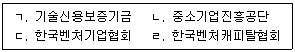
- ㄱ, ㄴ
- ㄱ, ㄹ
- ㄱ, ㄴ, ㄹ
- ㄴ, ㄷ, ㄹ
- ㄱ, ㄴ, ㄷ, ㄹ
(정답률: 알수없음)
17. 중소기업진흥에 관한 법률상 단지조성사업의 실시계획 승인에 관한 설명으로 옳은 것은?
- 중소기업자등이 단지조성사업을 시행하려는 경우 실시계획을 작성하여 중소기업청장의 승인을 받아야 한다.
- 중소기업자등이 단지조성사업 실시계획의 승인을 받으려면 그 실시계획을 시ㆍ도지사를 거쳐 중소기업청장에게 제출하여야 한다.
- 중소기업청장은 단지조성사업 실시계획을 승인하면 이를 고시하여야 한다.
- 중소기업청장이 단지조성사업의 실시계획을 승인하면 국토교통부장관에게 보고하여야 한다.
- 단지조성사업의 실시계획을 승인하려면 협동화사업을 위한 단지조성의 적합성 및 적정규모 여부를 고려하여 결정하여야 한다.
(정답률: 알수없음)
18. 중소기업진흥에 관한 법률상 용어에 관한 설명으로 옳지 않은 것은?
- 중소기업자가 생산하는 제품의 원활한 유통을 도모하고 물류비용을 절감하기 위하여 유통시설을 설치하거나 개선하는 것을 물류현대화라 한다.
- 중소기업자가 생산성과 품질의 향상을 위하여 각종 자동화설비를 통하여 생산공정을 합리적으로 개선하는 것을 중소기업의 합리화라 한다.
- 여러 개의 기업이 제품 개발, 원자재 구매, 생산, 판매 등에서 각각의 전문적인 역할을 분담하여 상호보완적으로 제품을 개발ㆍ생산ㆍ판매하거나 서비스를 제공하는 것을 협업이라 한다.
- 기업의 의사결정과 활동이 사회와 환경에 미치는 영향에 대하여 투명하고 윤리적인 경영활동을 통하여 기업이 지는 책임을 사회적책임경영이라 한다.
- 중소기업자가 컴퓨터 또는 각종 제어장치를 이용하여 경영관리와 유통관리를 전산화하는 등 중소기업의 전산망을 구축하는 것을 중소기업의 정보화라 한다.
(정답률: 알수없음)
19. 중소기업진흥에 관한 법률상 가업승계의 동일성 유지 기준에 관한 일부 내용이다. ( )에 들어갈 숫자가 순서대로 옳은 것은?
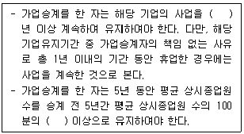
- 5, 70
- 5, 80
- 7, 70
- 10, 70
- 10, 80
(정답률: 알수없음)
20. 중소기업진흥에 관한 법률상 지도사의 등록취소 사유가 아닌 것은?
- 갱신등록을 하지 아니한 경우
- 거짓으로 등록 또는 갱신등록을 한 경우
- 지도사등록증을 다른 사람에게 대여한 경우
- 지도와 관련하여 알게 된 비밀을 다른 사람에게 누설한 경우
- 지도와 관련하여 중대한 과실로 다른 사람에게 중대한 손해를 입힌 경우
(정답률: 알수없음)
21. 중소기업진흥에 관한 법률상 지도사가 될 수 있는 자는?
- 피성년후견인
- 파산선고를 받고 복권되지 아니한 자
- 금고 이상의 형을 선고받고 집행을 받지 아니하기로 확정된 후 2년이 지나지 아니한 자
- 금고 이상의 형의 집행유예를 선고받고 그 유예기간 중에 있는 자
- 지도사의 등록이 취소된 날부터 2년이 경과된 자
(정답률: 알수없음)
22. 중소기업진흥에 관한 법률상 협동화사업에 관한 설명으로 옳지 않은 것은?
- 중소기업협동화 기준은 중소기업청장이 정하고 고시하여야 한다.
- 단지조성사업은 그 면적이 3만 제곱미터 이상이어야 한다.
- 협동화실천계획의 승인권자는 그 실천계획이 협동화기준에 부합한다고 인정되는 경우에만 승인한다.
- 협동화실천계획의 승인을 취소하려면 청문을 하여야 한다.
- 중소기업청장이 협동화기준을 정할 때에는 미리 관할 시ㆍ도지사와 협의하여야 한다.
(정답률: 알수없음)
23. 중소기업 기술혁신 촉진법상 중소기업기술정보진흥원에 관한 설명으로 옳지 않은 것은?
- 기술정보진흥원은 중소기업자ㆍ개인 또는 단체가 출연하여 설립한다.
- 기술정보진흥원은 법인으로 하며, 주된 사무소의 소재지에서 설립등기를 함으로써 성립한다.
- 기술정보진흥원은 중소기업 기술혁신 기반조성사업을 한다.
- 중앙행정기관의 장 및 지방자치단체의 장은 기술정보진흥원의 사업에 드는 비용의 일부를 출연하여야 하며 그 지분에 따른 수익의 분배를 받는다.
- 기술정보진흥원에 관하여 이 법에서 규정한 것을 제외하고는「민법」중 재단법인에 관한 규정을 준용한다.
(정답률: 알수없음)
24. 중소기업 기술혁신 촉진법상 중소기업청장이 기술혁신사업에 참여한 중소기업자에 대하여 5년 이내의 범위에서 기술혁신 촉진 지원사업에의 참여를 제한할 수 있는 경우로 명시되지 않은 것은?
- 정당한 사유 없이 기술료 납부를 게을리한 경우
- 정당한 절차 없이 연구개발 내용을 누설한 경우
- 금고 이상의 형의 집행유예를 선고받고 그 유예기간 중에 있는 경우
- 연구개발 자료나 결과를 표절한 경우
- 거짓으로 연구개발에 참여하거나 수행한 경우
(정답률: 알수없음)
25. 중소기업 기술혁신 촉진법의 내용으로 옳지 않은 것은?
- 중소기업청장은 중소기업의 기술혁신을 촉진하기 위해 중소기업 정보화 지원사업을 추진하여야 한다.
- 중소기업청장은 기술혁신촉진 지원사업 추진실태 보고서를 작성하여 국무회의에 보고하여야 한다.
- 중소기업청장은 중소기업의 기술혁신을 촉진하기 위해 필요하다고 인정하는 경우 기술혁신능력을 보유한 중소기업자가 단독 또는 공동으로 수행하는 기술혁신사업에 출연할 수 있다.
- 중소기업청장은 중소기업의 기술혁신 등을 촉진하기 위하여「근로자직업능력개발법」에 따른 기능대학이 중소기업자와 공동으로 수행하는 산학협력 지원사업에 출연할 수 있다.
- 중소기업의 기술혁신 촉진에 관한 사항을 심의ㆍ조정하기 위해 중소기업청에 중소기업 기술혁신추진위원회를 둔다.
(정답률: 알수없음)
26. 중소기업 기술혁신 촉진법상 중소기업 기술혁신지원계획을 수립ㆍ시행하여야 하는 중앙행정기관에 해당되지 않는 것은?
- 고용노동부
- 환경부
- 농촌진흥청
- 문화체육관광부
- 문화재청
(정답률: 알수없음)
27. 여성기업지원에 관한 법률상 균형성장촉진위원회에 관한 내용으로 옳지 않은 것은?
- 중소기업청장은 매년 2월말까지 균형성장촉진위원회의 심의를 거쳐 여성기업의 활동을 촉진하기 위한 기본계획을 수립하고 이를 추진하여야 한다.
- 균형성장촉진위원회는 위원장 1인을 포함한 20인 이내의 위원으로 구성한다.
- 경제분야ㆍ중소기업 및 여성정책에 관한 학식과 경험이 풍부한 자 중에서 중소기업청장이 위촉한 위원의 임기는 2년으로 하되, 1차에 한하여 연임할 수 있다.
- 여성가족부장관은 여성가족부의 고위공무원단에 속하는 공무원 중에서 위원 1인을 지명할 수 있다.
- 균형성장촉진위원회의 위원장은 중소기업청장이 된다.
(정답률: 알수없음)
28. 여성기업지원에 관한 법률의 내용으로 옳지 않은 것은?
- 중소기업청장은 여성경제인에 대해 경영능력을 향상시키기 위한 연수 등을 실시할 수 있다.
- 공공기관의 장은 여성기업제품의 구매를 촉진해야 한다.
- 중소기업청장은「중소기업창업 지원법」상 중소기업 창업지원계획에 여성의 창업촉진을 위한 계획을 포함시켜야 한다.
- 지방자치단체는 기업에 대한 자금을 지원할 때 여성기업의 활동과 창업을 촉진하기 위해 여성기업을 우대해야 한다.
- 지방자치단체는 한국여성경제인협회의 요구가 있으면 공유재산을 무상으로 대부해야 한다.
(정답률: 알수없음)
29. 소기업 및 소상공인 지원을 위한 특별조치법상 주된 업종별 상시 근로자 수가 소상공인에 해당 되지 않는 것은?
- 보건업: 5명
- 운수업: 6명
- 건설업: 7명
- 제조업: 8명
- 광업: 9명
(정답률: 알수없음)
30. 소기업 및 소상공인 지원을 위한 특별조치법의 내용으로 옳지 않은 것은?
- 중소기업청장은 3년마다 소상공인의 창업ㆍ경영실적ㆍ사업전환 현황 등 소상공인육성시책의 수립에 필요한 실태조사를 하고 그 결과를 공표해야 한다.
- 중소기업청장은 필요한 경우 유한회사인 소기업을 주식회사로 조직을 변경하려고 하는 소기업에 대한 자금 등의 지원방안을 수립할 수 있다.
- 국가나 지방자치단체는 소기업 및 소상공인의 육성ㆍ발전을 위하여「조세특례제한법」,「지방세특례제한법」, 그 밖의 관계 법률에서 정하는 바에 따라 소득세, 법인세, 취득세, 재산세 및 등록면허세 등을 감면할 수 있다.
- 소기업 중「산업집적활성화 및 공장설립에 관한 법률」에 따른 공장의 건축면적 또는 이에 준하는 사업장의 면적이 1,000 제곱미터 미만인 기업의 경우「부가가치세법」제5조에 따라 발급받은 사업자등록증은 공장등록을 하였음을 증명하는 서류로 본다.
- 공공기관의 장은 물품 또는 용역의 구매에 있어서 셋 이상의 소기업이「중소기업협동조합법」의 규정에 따른 중소기업협동조합과 공동사업을 하여 제품화한 경우 해당 소기업과 제한경쟁입찰로 조달계약을 체결할 수 있다.
(정답률: 알수없음)
31. 중소기업 사업전환 촉진에 관한 특별법상 사업전환과 관련된 내용으로 옳지 않은 것은? (단, 주식교환의 경우 주권상장법인은 제외)
- 중소기업청장은 승인기업의 사업전환계획의 이행여부와 실적 등을 정기적으로 조사하여야 한다.
- 승인기업이 사업전환계획을 중단하려면 중소기업청장의 승인을 받아야 한다.
- 주식회사인 승인기업이 주식교환을 통하여 다른 주식회사의 주식을 취득한 경우에는 취득한 날부터 1년 이상 그 주식을 보유하여야 한다.
- 주식회사인 승인기업이 사업전환을 위하여 주식교환을 하려는 경우 주식교환계약서를 작성하여 주주총회의 승인을 받아야 한다.
- 주식회사인 승인기업이 사업전환을 위하여 주식교환을 하는 경우 그 교환주식의 수가 발행주식총수의 100분의 50을 초과하지 않으면 주주총회의 승인을 이사회의 승인으로 갈음할 수 있다.
(정답률: 알수없음)
32. 중소기업 사업전환 촉진에 관한 특별법상 합병절차의 간소화 등에 관한 일부 규정이다. ( )에 들어갈 숫자가 순서대로 옳은 것은?
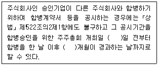
- 7, 1
- 7, 2
- 10, 1
- 10, 2
- 10, 3
(정답률: 알수없음)
33. 중소기업 사업전환 촉진에 관한 특별법상 사업전환의 범위에 관한 일부 규정이다. ( )에 들어갈 숫자가 순서대로 옳은 것은?
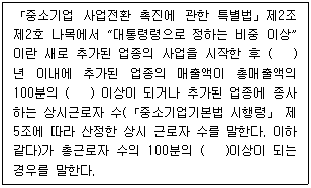
- 2, 20, 20
- 2, 20, 30
- 2, 30, 30
- 3, 30, 20
- 3, 30, 30
(정답률: 알수없음)
34. 중소기업 사업전환 촉진에 관한 특별법상 중소기업청장이 지방중소기업청장에게 위임하는 권한으로 명시되지 않은 것은?
- 사업전환계획의 승인
- 사업전환계획의 변경승인
- 사업전환계획 승인의 취소
- 사업전환계획의 이행실적조사에 관한 사항
- 승인기업의 장부ㆍ서류 등의 검사에 관한 사항
(정답률: 알수없음)
35. 중소기업 인력지원 특별법상 근로자가 해당 직종과 관련된 분야에서 신기술에 기반한 창업을 하려는 경우, 중소기업청장이 자금지원과 관련정보제공 등을 우선적으로 지원할 수 있는 자에 해당되지 않는 것은?
- 중소기업에서 같은 분야 및 직종의 생산업무에 10년 종사한 자
- 「국가기술자격법」에 따라 국가기술자격을 취득하고 같은 분야의 중소기업에 10년 종사한 자
- 「숙련기술장려법」에 따른 대한민국명장으로서 선정 당시와 같은 분야의 중소기업에 5년 종사한 자
- 「숙련기술장려법」에 따른 국내기능경기대회 입상자로서 같은 분야의 중소기업에 5년 종사한 자
- 「숙련기술장려법」에 따른 국제기능올림픽대회 입상자로서 같은 분야의 중소기업에 5년 종사한 자
(정답률: 알수없음)
36. 중소기업 인력지원 특별법상 일부 내용이다. ( )에 들어갈 용어가 순서대로 옳은 것은?
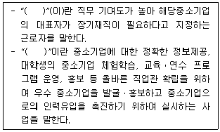
- 중소기업 장기재직근로자, 인재육성사업
- 중소기업 핵심인력, 인력구조 고도화사업
- 중소기업 장기재직근로자, 인식개선사업
- 중소기업 핵심인력, 인식개선사업
- 중소기업 장기재직근로자, 인력구조 고도화사업
(정답률: 알수없음)
37. 중소기업 인력지원 특별법상 인재육성형 중소기업의 지정 취소에 관한 내용으로 옳지 않은 것은?
- 거짓이나 그 밖의 부정한 방법으로 인재육성형 중소기업으로 지정을 받은 경우 중소기업청장은 그 지정을 취소해야 한다.
- 인재육성형 중소기업으로 지정을 받은 자가 그 사업을 폐업한 경우 중소기업청장은 그 지정을 취소해야 한다.
- 인재육성형 중소기업이 지정기준에 적합하지 아니하게 된 경우 중소기업청장은 그 지정을 취소해야 한다.
- 중소기업청장은 인재육성형 중소기업으로 지정을 받은 자에 대해 그 지정을 취소하고자 하는 경우에는 청문을 실시해야 한다.
- 중소기업청장은 인재육성형 중소기업 지정이 취소된 자에 대하여는 그 취소일부터 3년의 범위에서 지정을 하지 아니할 수 있다.
(정답률: 알수없음)
38. 중소기업 인력지원 특별법의 내용으로 옳지 않은 것은?
- 중소기업 핵심인력 성과보상기금은 중소기업진흥공단이 관리ㆍ운용한다.
- 정부는 대통령령으로 정하는 요건을 충족하는 경우 인력고도화계획의 시행에 드는 경비의 일부를 지원할 수 있다.
- 중소기업청장은 중소기업 기술인력의 기술수준향상을 위하여 외국 대학과의 산학협력을 통한 기술인력 협력사업을 수행하는 자에게 비용의 전부 또는 일부를 지원할 수 있다.
- 정부는 중소기업에 5년 이상 재직한 자로서 전문기술ㆍ기능인력으로 발굴된 자에 대해서는 문화생활 향상 등을 위한 지원을 할 수 있다.
- 중소기업청장은 중소기업에 필요한 인력확보를 위해 인력구조고도화사업계획을 수립ㆍ시행하여야 한다.
(정답률: 알수없음)
39. 장애인기업활동 촉진법상 한국장애경제인협회에 관한 설명으로 옳은 것은?
- 한국장애경제인협회를 설립하려면 그 대표자는 정관과 그 밖에 필요한 서류를 고용노동부장관에게 제출하여 설립허가를 받아야 한다.
- 한국장애경제인협회를 설립하고자 하는 경우 장애경제인 3인 이상의 발기인이 필요하다.
- 한국장애경제인협회가 국유재산을 무상으로 대부 받은 날부터 2년이 지나도록 목적사업을 시행하지 아니하는 경우 국가는 대부계약을 해제하거나 해지할 수 있다.
- 한국장애경제인협회는 장애인기업종합지원센터를 민법에 의한 사단법인으로 설립할 수 있다.
- 이 법에 따른 협회가 아닌 자가 한국장애경제인협회와 비슷한 명칭을 사용한 경우에는 200만원 이하의 과태료를 부과한다.
(정답률: 알수없음)
40. 장애인기업활동 촉진법의 내용으로 옳은 것은?
- 장애인이 소유 및 경영하는 기업이면 모두 장애인 기업이 된다.
- 「국가유공자 등 예우 및 지원에 관한 법률」에 따른 상이등급 중 어느 하나에 해당한다는 판정을 받은 사람은 장애인에 해당한다.
- 고용노동부장관은 공공기관이 장애인기업에 불합리한 차별적 관행이나 제도를 시행할 경우 그 시정을 요청하여야 한다.
- 기본계획 및 장애인기업활동촉진에 관한 주요사항을 심의하기 위하여 한국장애경제인협회에 장애인기업활동촉진위원회를 둔다.
- 중소기업청장은 장애인기업의 실태를 파악하기 위하여 매년 실태 조사를 하고 그 결과를 공표하여야 한다.
(정답률: 알수없음)
2과목: 경영학
41. 허즈버그(F. Herzberg)는 직무만족-생산성의 관련성을 연구한 결과, 2요인 이론을 주장하였다. 허즈버그가 제시한 동기요인으로 옳은 것을 모두 고른 것은?
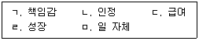
- ㄱ,ㄴ,ㄷ,ㄹ
- ㄱ,ㄴ,ㄷ,ㅁ
- ㄱ,ㄴ,ㄹ,ㅁ
- ㄱ,ㄷ,ㄹ,ㅁ
- ㄴ,ㄷ,ㄹ,ㅁ
(정답률: 알수없음)
42. 이 가격설정방법은 가격을 십진수 단위체계보다 통상 1~2 단위 낮춘 체계로 책정하는 것으로서, 예를 들어 100만원 대신에 99만원으로 가격을 정한다. 소비자로 하여금 기업이 제품가격을 정확하게 계산하여 최대한 낮추었다는 인상을 주는 심리적 가격설정방법은?
- 초기고가가격
- 위신가격(긍지가격)
- 단수가격
- 관습가격
- 준거가격
(정답률: 알수없음)
43. 페이욜(H. Fayol)이 제시한 경영활동(관리자가 해야 할 의무) 5요소로 옳지 않은 것은?
- 통제
- 실행
- 지휘(명령)
- 조정
- 조직
(정답률: 알수없음)
44. 시스템이론 관점에서 경영의 투입 요소와 산출요소를 구분할 때, 산출 요소인 것은?
- 노동
- 자본
- 전략
- 정보
- 제품
(정답률: 알수없음)
45. 인간관계론에 관한 설명으로 옳지 않은 것은?
- 비용의 논리를 추구한다.
- 비공식 집단을 강조한다.
- 사회적 인간관과 연관이 있다.
- 만족이 생산성 향상을 가져온다고 생각한다.
- 감정의 논리에 치중하는 경향이 있다.
(정답률: 알수없음)
46. 포터(M. E. Porter)의 가치사슬모형에서 기업의 본원적 활동이 아닌 것은?
- 원부자재 구매활동
- 서비스 활동
- 생산활동
- 물류활동
- 인적자원관리 활동
(정답률: 알수없음)
47. 목표관리(MBO: Management By Objectives)에 관한 설명으로 옳지 않은 것은?
- 단기목표를 강조하는 경향이 있다.
- 결과에 의한 평가가 이루어진다.
- 사기와 같은 직무의 무형적인 측면을 중시한다.
- 종업원들이 역량에 비해 더 쉬운 목표를 설정하려는 경향이 있다.
- 평가와 관련하여 행정적인 서류 업무가 증가하는 경향이 있다.
(정답률: 알수없음)
48. 배스(B. M. Bass)의 변혁적 리더십에 포함되는 4가지 특성이 아닌 것은?
- 카리스마(이상적 영향력)
- 영감적 동기부여
- 지적인 자극
- 개인적 배려
- 성과에 대한 보상
(정답률: 알수없음)
49. 마케팅 믹스 중 촉진 활동이 아닌 것은?
- 광고(Advertisement)
- 포지셔닝(Positioning)
- 인적판매(Personal sale)
- 판매촉진(Promotion)
- PR(Public relations)
(정답률: 알수없음)
50. 막스 베버(M. Weber)가 제시한 이상적 관료조직의 원칙으로 옳지 않은 것은?
- 분업과 전문화
- 공식적인 규칙과 절차
- 비개인성
- 연공에 의한 승진
- 공과 사의 명확한 구분
(정답률: 알수없음)
51. 본원적 경쟁전략의 하나인 원가우위 전략에서 원가의 차이를 발생시키는 요인이 아닌 것은?
- 학습 및 경험곡선 효과
- 경비에 대한 엄격한 통제
- 적정규모의 설비
- 디자인의 차별화
- 규모의 경제
(정답률: 알수없음)
52. 동종 또는 유사업종의 기업 간 독립성을 유지하면서 상호경쟁을 배제하는 것은?
- 카르텔(Cartel)
- 인수합병(M&A)
- 트러스트(Trust)
- 오픈숍(Open shop)
- 클로즈드숍(Closed shop)
(정답률: 알수없음)
53. 포터(M. E. Porter)의 산업분석 모형에서 그 산업의 경쟁력을 결정하는 5가지 요소가 아닌 것은?
- 차별화
- 잠재적 진입자
- 대체재
- 경쟁사
- 공급자
(정답률: 알수없음)
54. 주식회사의 대리인 문제에서 발생하는 감시비용에 포함되지 않는 것은?
- 성과급
- 사외이사
- 잔여손실
- 주식옵션
- 외부회계감사
(정답률: 알수없음)
55. 우호적인 제3자를 통해 지분을 확보하게 한 뒤, 주주총회에서 제3자로 하여금 투표권을 행사하게하여 기습적으로 경영권을 탈취하는 방법은?
- 팩맨(Pac man)
- 파킹(Parking)
- 그린메일(Green mail)
- 공개매수(Tender offer)
- 독약처방(Poison pill)
(정답률: 알수없음)
56. 유통경로전략을 수립할 때 일반적으로 직접유통경로(또는 유통단계의 축소)를 선택하는 경우가 아닌 것은?
- 제품의 기술적 복잡성이 클수록
- 경쟁의 차별화를 시도할수록
- 제품이 표준화 되어 있을수록
- 소비자의 지리적 분산정도가 낮을수록
- 제품의 부패가능성이 높을수록
(정답률: 알수없음)
57. 국제표준화기구(ISO)에서 제정한 환경경영체제와 관련된 국제표준은?
- ISO 9001
- ISO 14001
- ISO 22000
- ISO 26000
- ISO/IEC 27001
(정답률: 알수없음)
58. 다른 기업에게 수수료를 받는 대신 자사의 기술이나 상품 사양을 제공하고 그 결과로 생산과 판매를 허용하는 것은?
- 아웃소싱(Outsourcing)
- 합작투자(Joint venture)
- 라이선싱(Licensing)
- 계약생산(Contract manufacturing)
- 턴키프로젝트(Turn-key project)
(정답률: 알수없음)
59. 개당 10,000원에 판매되는 제품 A의 연간수요는 400개로 일정하게 발생하고 있으며, 1회 주문비용은 5,000원, 개당 연간 재고유지비용은 판매가격의 25%정도로 추산하고 있다. 경제적 주문량(EOQ) 모형을 적용하여도 큰 무리가 없다고 가정할 때, 경제적 주문량은?
- 25개
- 30개
- 35개
- 40개
- 50개
(정답률: 알수없음)
60. 조직구조를 설계할 때 고려하는 상황변수가 아닌 것은?
- 전략(Strategy)
- 제품(Product)
- 기술(Technology)
- 환경(Environment)
- 규모(Size)
(정답률: 알수없음)
61. 민츠버그(H. Mintzberg)가 제시한 조직의 5가지 부문이 아닌 것은?
- 최고경영층ㆍ전략경영 부문(Strategic apex)
- 일반지원 부문(Supporting staff)
- 중간계층 부문(Middle line)
- 전문ㆍ기술지원 부문(Technostructure)
- 사회적 네트워크 부문(Social network)
(정답률: 알수없음)
62. 기계적 조직구조의 특징이 아닌 것은?
- 많은 규칙
- 집중화된 의사결정
- 경직된 위계질서
- 비공식적 커뮤니케이션
- 계층적 구조(Tall structure)
(정답률: 알수없음)
63. 생산품의 결함발생률을 백만 개 중 3-4개 수준으로 낮추려는 데서 시작된 경영혁신운동으로 '측정'-'분석'-'개선'-'관리'(MAIC)의 과정을 통하여 문제를 찾아 개선해가는 과정은?
- 학습조직(Learning organization)
- 리엔지니어링(Reengineering)
- 식스 시그마(6-sigma)
- ERP(Enterprise resource planning)
- BSC(Balanced score card)
(정답률: 알수없음)
64. 기업의 성과에 영향을 주는 기업 외부환경(external environment)이 아닌 것은?
- 사회문화
- 법률
- 경제정책
- 정치
- 최고경영자
(정답률: 알수없음)
65. 조직의 말단부에서 이루어지는 일상적인 업무처리를 자동화하여 처리해주는 시스템은?
- 전략계획시스템(Strategic planning system)
- 운영통제시스템(Operational control system)
- 거래처리시스템(Transactional processing system)
- 관리통제시스템(Managerial control system)
- 의사결정지원시스템(Decision support system)
(정답률: 알수없음)
66. 동일한 제품이나 지역, 고객, 업무과정을 중심으로 조직을 분화하여 만든 부문별 조직(사업부제 조직)의 장점으로 옳지 않은 것은?
- 책임소재가 명확하다.
- 기능부서간의 조정이 보다 쉽다.
- 환경변화에 대해 유연하게 대처할 수 있다.
- 특정한 제품, 지역, 고객에게 특화된 영업을 할 수 있다.
- 자원의 효율적인 활용으로 규모의 경제를 기할 수 있다.
(정답률: 알수없음)
67. 기업 내 직무들 간의 상대적 가치를 기준으로 임금을 결정하는 유형은?
- 직무급(Job-based pay)
- 연공급(Seniority-based pay)
- 역량위주의 임금(Competency-based pay)
- 스킬위주의 임금(Skill-based pay)
- 개인별 인센티브(Individual incentive plan)
(정답률: 알수없음)
68. 의사결정에 관한 설명으로 옳지 않은 것은?
- 합리적 의사결정은 문제 식별→대안 개발→대안평가와 선정→실행의 단계를 거친다.
- 불확실성의 상황에서 의사결정을 할 때에도 미래상황에서의 객관적 확률을 알 수 있다.
- 사이먼(H. Simon)은 의사결정자의 제한된 합리성으로 인해 이상적인 대안보다는 만족할만한 대안을 찾는 것이 바람직하다는 이론을 제시했다.
- 의사결정은 프로그램적(programmed) 의사결정과 비프로그램적(nonprogrammed) 의사결정으로 구분할 수 있다.
- 경영과정 전반에 걸친 경영활동은 의사결정의 연속이라고 할 수 있다.
(정답률: 알수없음)
69. 무한책임사원과 유한책임사원으로 구성되는 기업형태는?
- 합명회사
- 합자회사
- 유한회사
- 주식회사
- 민법상의 조합
(정답률: 알수없음)
70. 테일러(F. Taylor)의 과학적 관리에서 활용된 방법이 아닌 것은?
- 차별적 성과급제
- 작업도구의 표준화
- 직무에 적합한 작업자 선발과 훈련
- 권한과 책임의 원칙
- 시간ㆍ동작 연구
(정답률: 알수없음)
71. 마이클 해머(M. Hammer)가 주장한 경영혁신 기법으로서 서비스 부문의 프로세스ㆍ공정ㆍ절차 등을 근본적으로 변혁, 개선하고자 하는 것은?
- 리엔지니어링(Reengineering)
- 다운사이징(Downsizing)
- 벤치마킹(Benchmarking)
- 전사적 품질경영(TQM: Total Quality Management)
- 카이젠(Kaizen)
(정답률: 알수없음)
72. 甲은 산행을 가기로 하였는데, A 대형마트 인터넷쇼핑몰에서 품질 좋은 등산화를 싸게 판다는 얘기를 친구들로부터 들은 후 그 쇼핑몰에서 등산화를 구입하였다. 이러한 마케팅을 일컫는 말은?
- 퍼미션 마케팅(Permission marketing)
- 박리다매 마케팅(薄利多賣 marketing)
- 옵트인 마케팅(Opt-in marketing)
- 바이럴 마케팅(Viral marketing)
- 옵트아웃 마케팅(Opt-out marketing)
(정답률: 알수없음)
73. 전략적 의사결정의 특징으로 옳지 않은 것은?
- 전사적
- 비반복적
- 비구조적
- 분권적
- 비정형적
(정답률: 알수없음)
74. 시장을 세분화하는 데 사용하는 기준으로서 인구통계적 변수가 아닌 것은?
- 가족규모 및 형태
- 소득
- 라이프 스타일
- 교육수준
- 종교
(정답률: 알수없음)
75. 적시생산시스템(JIT)에 관한 설명으로 옳지 않은 것은?
- 유럽의 자동차회사에서부터 시작되었음
- 공간절약을 통해 비용을 절감하고자 함
- 재고를 최소화하고자 함
- 이 시스템은 대량의 반복생산체제에 적합함
- 유통망의 장애를 고려하지 않는다는 단점이 존재
(정답률: 알수없음)
76. 경영전략의 수준에 관한 설명으로 옳지 않은 것은?
- 경영전략은 조직규모에 따라 차이가 있으나 일반적으로 기업차원의 전략, 사업부 단위 전략, 기능별전략으로 구분된다.
- 성장, 유지, 축소, 철수, 매각, 새로운 사업에의 진출 등에 관한 전략적 의사결정은 기업차원의 전략 영역에 포함된다.
- 사업부 전략은 각 사업영역과 제품분야에서 어떻게 경쟁우위를 획득하고 유지해 나갈 것인지를 결정하는 전략을 말한다.
- 기능별 전략은 사업단위들간의 시너지효과를 높이는데 초점을 둔다.
- 생산, 재무, 인사, 마케팅 등의 활동 방향을 정하기 위한 것은 기능별 전략이다.
(정답률: 알수없음)
77. 기업윤리의 접근법 중 최대다수의 최대행복 제공을 목표로 하는 접근법은?
- 공리적 접근
- 상대적 접근
- 도덕권리적 접근
- 정의적 접근
- 의무론적 접근
(정답률: 알수없음)
78. 제품수명주기에서 성장기의 특성에 관한 설명으로 옳지 않은 것은?
- 수요가 급증하기 시작한다.
- 새로운 경쟁자들이 증가한다.
- 유통경로가 확대되고 시장규모가 커진다.
- 제품인지도를 높여 새로운 구매수요를 발굴한다.
- 제조원가가 급속히 감소함에 따라 이윤이 증가한다.
(정답률: 알수없음)
79. 매슬로우(A. Maslow)의 욕구단계설에 포함되는 욕구가 아닌 것은?
- 생리적 욕구(Psychological needs)
- 자아존중의 욕구(Self-esteem needs)
- 안전의 욕구(Safety needs)
- 자아실현의 욕구(Self-actualization needs)
- 행복의 욕구(Happiness needs)
(정답률: 알수없음)
80. 프렌치와 레이븐(J. R. P. French & B. Raven)이 제시한 조직 내 권력(power)의 원천 5가지에 포함되지 않는 것은?
- 보상적 권력(Reward power)
- 사회적 권력(Social power)
- 강압적 권력(Coercive power)
- 합법적 권력(Legitimate power)
- 전문적 권력(Expert power)
(정답률: 알수없음)
3과목: 회계학개론
81. 재무보고를 위한 개념체계에 관한 설명으로 옳지 않은 것은?
- 유용한 재무정보의 근본적인 질적특성은 목적적합성과 충실한 표현이다.
- 재무정보에 예측가치, 확인가치 또는 이 둘 모두가 있다면 그 재무정보는 의사결정에 차이가 나도록 할 수 있다.
- 재무보고서는 사업활동과 경제활동에 대해 합리적인 지식이 있고 부지런히 정보를 검토하고 분석하는 정보이용자를 위해 작성된다.
- 재무보고를 위한 개념체계는 어떠한 특정 한국채택국제회계기준에 우선하지 아니한다.
- 재무정보가 나타내고자 하는 현상을 충실하게 표현하기 위해서는 완전하고, 비교가능성이 높고, 오류가 없어야 한다.
(정답률: 알수없음)
82. 재무제표 작성의 기본가정에 해당하는 것은?
- 계속기업
- 기간별 보고
- 기업실체
- 화폐측정
- 보수주의
(정답률: 알수없음)
83. 재무상태표와 포괄손익계산서에 인식되고 평가되어야 할 재무제표 요소의 화폐금액을 결정하는 과정은?
- 인식
- 측정
- 분개
- 전기
- 결산
(정답률: 알수없음)
84. (주)대한의 20X1년도 현금흐름표의 기말 현금 및 현금성자산이 \100,000이고, 20X1년도 포괄손익계산서의 매출액은 \30,000이다. ㈜대한의 20X1년말 재무상태표상 현금및현금성자산은?
- \0
- \30,000
- \70,000
- \100,000
- \130,000
(정답률: 알수없음)
85. 현금흐름표 작성 시 영업활동 현금흐름에 해당하지 않은 것은?
- 종업원에게 급여를 현금지급
- 상품 외상판매대금을 현금회수
- 제3자에게 현금을 대여
- 매입채무를 현금으로 상환
- 단기매매 목적으로 유가증권을 현금으로 취득
(정답률: 알수없음)
86. 재무제표에 관한 설명으로 옳은 것은?
- 모든 재무제표는 발생기준회계를 적용하여 작성한다.
- 유사한 항목은 중요성 분류에 따라 재무제표에 구분하여 표시한다.
- 관련된 자산과 부채는 항상 상계하여 표시한다.
- 전체 재무제표에 주석은 포함되지 않는다.
- 재무제표의 목적은 특정한 정보이용자의 경제적의사결정에 유용한 기업의 재무상태, 재무성과와 재무상태변동에 관한 정보를 제공하는 것이다.
(정답률: 알수없음)
87. (주)대한의 20X1년도 포괄손익계산서상 보험료가 \120,000이다. 미지급보험료와 선급보험료에 대한 자료가 다음과 같을 때, (주)대한이 20X1년도 중 현금으로 지급한 보험료는?
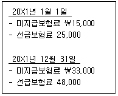
- \79,000
- \87,000
- \115,000
- \125,000
- \153,000
(정답률: 알수없음)
88. (주)대한의 현재 유동비율은 120%, 당좌비율은 70%이다. 매입채무를 현금으로 상환할 경우 (주)대한의 유동비율과 당좌비율에 각각 미치는 영향으로 옳은 것은?(순서대로 유동비율, 당좌비율)
- 감소, 증가
- 감소, 영향없음
- 증가, 감소
- 증가, 영향없음
- 영향없음, 영향없음
(정답률: 알수없음)
89. 다음 사항을 수정하기 전 (주)대한의 당기순이익이 \1,⑤0,000이라면, 수정 반영한 후 (주)대한의 당기순이익은?
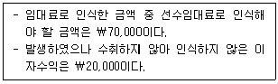
- \1,000,000
- \1,030,000
- \1,⑤0,000
- \1,070,000
- \1,150,000
(정답률: 알수없음)
90. 다음 거래와 관련된 수정분개에 관한 설명으로 옳은 것은?
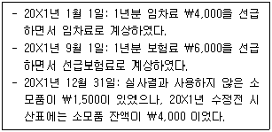
- 임차료와 관련하여 20X1년말 별도로 수행할 수정분개는 없다.
- 20X1년도에 인식할 보험료는 \4,000이다.
- 보험료와 관련하여 20X1년말 별도로 수행할 수정분개는 없다.
- 20X1년말 재무상태표에 인식할 소모품은 \4,000 이다.
- 20X1년말 수정분개를 통해 소모품비로 인식할 금액은 \1,500이다.
(정답률: 알수없음)
91. (주)대한은 20X1년 1월 1일에 기계장치를 \1,000,000에 취득(내용연수 5년, 잔존가치 \100,000)하고 연수합계법으로 감가상각하였다. (주)대한은 20X3년초에 기계장치의 생산력 증대를 위해 \200,000을 지출하였으며 이로 인해 잔존가치는 변함이 없으나 내용연수는 2년 더 연장되었다. (주)대한이 20X3년초에 감가상각방법을 정액법으로 변경하였다면, 동 기계장치와 관련하여 (주)대한이 20X3년도에 인식해야할 감가상각비는 얼마인가? (단, (주)대한은 기계장치에 대하여 원가모형을 적용하며, 감가상각은 월할계산한다.)
- \72,000
- \82,000
- \92,000
- \112,000
- \132,000
(정답률: 알수없음)
92. 감사인은 다음의 경우 어떠한 감사의견을 표명하여야 하는가?
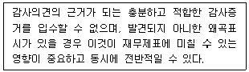
- 한정의견
- 의견제한
- 의견거절
- 의견보류
- 부적정의견
(정답률: 알수없음)
93. 재무상태표에 현금및현금성자산으로 분류되는 것으로만 묶인 것은?
- 타인발행수표, 당좌예금, 배당금지급통지서
- 당좌예금, 보통예금, 우표
- 미수금, 배당금지급통지서, 지점전도금
- 만기도래국채이자표, 급여가불증, 자기앞수표
- 우편환증서, 가계수표, 당좌개설보증금
(정답률: 알수없음)
94. 실지재고조사법을 이용하여 재고자산의 수량을 결정하는 (주)대한은 당기에 외상으로 구입한 상품에 대하여 회계처리를 누락하였고, 동 재고자산을 외부에 보관하기 때문에 기말재고 실사에서도 누락하였다. 이러한 일련의 사건이 (주)대한의 당기말 현재 자산, 부채 및 자본에 미치는 영향으로 옳은 것은?(순서대로 자산, 부채, 자본)
- 과소 계상, 과소 계상, 영향 없음
- 과소 계상, 과소 계상, 과대 계상
- 과소 계상, 영향 없음, 영향 없음
- 영향 없음, 과소 계상, 과대 계상
- 영향 없음, 과대 계상, 과소 계상
(정답률: 알수없음)
95. (주)대한이 20X1년도에 취득한 지분상품과 채무상품에 관한 자료는 다음과 같다. 
위 거래가 (주)대한의 20X1년도 당기순이익에 미치는 영향은?
- \14,000 감소
- \52,500 감소
- \67,000 증가
- \73,500 증가
- \85,500 증가
(정답률: 알수없음)
96. (주)대한의 상품매매와 관련된 다음 자료를 이용하여 매출원가를 산출한 금액으로 옳은 것은?
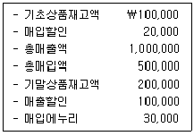
- \250,000
- \350,000
- \370,000
- \380,000
- \400,000
(정답률: 알수없음)
97. (주)대한은 20X1년 초 공장건설을 위하여 토지를 \20,000에 취득하였다. (주)대한이 토지에 대해 재평가모형을 적용하여 회계처리하고 있다면, 토지에 대한 재평가가 (주)대한의 20X2년도 당기순이익에 미치는 영향은?
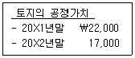
- \0
- \3,000 증가
- \3,000 감소
- \5,000 증가
- \5,000 감소
(정답률: 알수없음)
98. 유형자산의 취득원가에 포함되지 않는 것은?
- 유형자산의 매입 또는 건설과 직접적으로 관련되어 발생한 종업원급여
- 설치원가 및 조립원가
- 최초의 운송 및 취급 관련 원가
- 유형자산이 정상적으로 작동되는지 여부를 시험하는 과정에서 발생하는 원가
- 유형자산과 관련된 산출물에 대한 수요가 형성되는 과정에서 발생하는 가동손실과 같은 초기 가동손실
(정답률: 알수없음)
99. 기타포괄손익누계액에 영향을 미치지 않는 것은?
- 매도가능금융자산평가손실
- 해외사업장환산이익
- 자기주식처분손실
- 재평가잉여금
- 현금흐름위험회피파생상품평가이익
(정답률: 알수없음)
100. 무형자산에 관한 설명으로 옳지 않은 것은?
- 새로운 지식을 얻기 위해 투입된 금액은 자산으로 계상하지 않는다.
- 영업권은 상각하지 않는다.
- 내부적으로 창출한 브랜드, 고객목록은 무형자산으로 인식한다.
- 무형자산을 최초로 인식할 때는 원가로 측정한다.
- 영업권과 관련된 손상차손은 향후에 환입하지 않는다.
(정답률: 알수없음)
101. (주)대한은 20X1년 1월 1일에 액면금액 \1,000,000의 사채(표시이자율 10%, 만기 20X3년 12월 31일)를 유효이자율 15%로 할인하여 \885,839에 발행하였다. (주)대한이 동 사채의 발행으로 인하여 만기까지 부담하는 총 이자비용은?
- \114,161
- \300,000
- \350,000
- \414,161
- \450,000
(정답률: 알수없음)
102. (주)대한의 20X1년도 매입채무와 관련된 자료이다. (주)대한의 20X1년도 매입채무 상환액은?
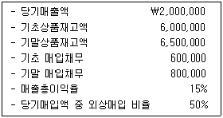
- \700,000
- \800,000
- \850,000
- \900,000
- \1,000,000
(정답률: 알수없음)
103. 사채의 회계처리에 관한 설명으로 옳은 것은?
- 사채할인발행차금이나 사채할증발행차금의 상각은 유효이자율법이나 정액법을 적용하여 수행한다.
- 사채할인발행이나 사채할증발행의 경우 모두 발행차금상각액은 매기 증가한다.
- 사채할인발행의 경우 사채의 장부금액은 매기 감소한다.
- 사채할인발행의 경우 이자지급액은 매기 증가하고, 사채할증발행의 경우 이자지급액은 매기 감소한다.
- 사채할증발행의 경우 이자비용은 매기 증가한다.
(정답률: 알수없음)
104. 순자산을 증가시키는 자본거래에 해당하는 것은?
- 주식을 할인발행한 경우
- 유통중인 자기주식을 액면금액 이상으로 취득한 경우
- 이익준비금을 자본전입한 경우
- 주식배당을 한 경우
- 주식병합을 한 경우
(정답률: 알수없음)
1⑤. (주)대한은 20X1년 1월 1일에 액면금액 \5,000인 보통주 100주를 주당 \4,500에 발행하고 현금을 납입받았으며, 신주발행비 \5,000을 현금으로 지급하였다. 다음 설명으로 옳지 않은 것은?
- 자본 증가액은 \445,000이다.
- 주식할인발행차금이 \55,000 증가한다.
- 자본잉여금은 변동이 없다.
- 자본의 차감항목이 \55,000 증가한다.
- 신주발행비 \5,000은 비용으로 처리한다.
(정답률: 알수없음)
106. (주)대한의 20X1년도 회계자료이다. ㈜대한의 20X1년 기초자본은?
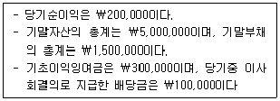
- \3,100,000
- \3,200,000
- \3,300,000
- \3,400,000
- \3,500,000
(정답률: 알수없음)
107. (주)대한의 20X1년초 유통보통주식수는 10,000주이며 20X1년도중 보통주식수의 변동내역은 다음과 같다. (주)대한의 20X1년도 주당이익 계산을 위한 가중평균유통보통주식수는? (단, 가중평균유통보통주식수는 월할계산한다.)
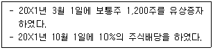
- 11,000주
- 11,280주
- 11,500주
- 12,000주
- 12,100주
(정답률: 알수없음)
108. (주)대한은 20X1년 1월 1일 (주)공덕에 회계프로그램운용과 관련한 용역을 2년간 \2,000,000에 제공하기로 계약하였다. 회계프로그램의 용역과 관련하여 예상되는 총원가는 \1,200,000이며, 20X1년도에 실제 발생한 원가는 \900,000이다. (주)대한이 용역의 제공으로 인한 수익을 진행기준을 적용하여 인식하는 경우 20X1년도의 용역이익은?
- \600,000
- \800,000
- \1,200,000
- \1,500,000
- \2,000,000
(정답률: 알수없음)
109. 유형자산에 관한 설명으로 옳은 것은?
- 유형자산의 공정가치가 장부금액을 초과하면 감가상각비를 인식하지 아니한다.
- 유형자산의 회수가능액이란 자산의 순공정가치와 사용가치 중 작은 금액을 말한다.
- 유형자산을 원가모형으로 평가하는 경우, 최초 인식 후에 유형자산은 원가에서 감가상각누계액과 손상차손누계액을 차감한 금액으로 평가한다.
- 유형자산이 손상된 경우 장부금액과 회수가능액의 차액은 기타포괄손실로 처리한다.
- 유형자산을 원가모형으로 평가하는 경우, 손상처리한 자산의 회수가능액이 차기 이후에 회복되면 손상차손누계액을 한도로 손상차손환입을 당기이익으로 인식하고, 그 한도를 넘어서는 금액은 기타포괄이익으로 인식한다.
(정답률: 알수없음)
110. 이연법인세 회계에 관한 설명으로 옳지 않은 것은?
- 납부세액만 법인세비용으로 계상하는 것 보다 수익비용대응 원칙에 충실한 방법이다.
- 감가상각비 한도초과가 \200이면 세율이 20%일 때 이연법인세자산이 \40 발생할 수 있다.
- 이연법인세자산이 증가하면 법인세비용도 증가한다.
- 접대비 한도초과가 발생하더라도 이연법인세자산은 변동하지 않는다.
- 세무상 이월결손금에 대해서는 이연법인세자산이 발생할 수 있다.
(정답률: 알수없음)
111. (주)대한은 20X1년 1월 1일에 장부금액 \900,000(공정가치 \1,000,000)인 설비자산을 \1,000,000에 처분함과 동시에 운용리스계약을 체결하였다. 리스한 설비자산의 잔존내용연수는 10년, 리스기간은 4년이며 리스료는 매년 말 \80,000씩 균등하게 지급한다. 설비자산의 처분과 운용리스계약이 (주)대한의 20X1년도 당기순이익에 미친 영향은?
- \0
- \10,000 증가
- \10,000 감소
- \20,000 증가
- \20,000 감소
(정답률: 알수없음)
112. 원가의 개념에 관한 설명으로 옳지 않은 것은?
- 직접원가는 특정 원가대상에 직접 추적할 수 있는 원가를 말한다.
- 변동원가는 관련범위 내에서 조업도가 증가할수록 발생원가 총액이 증가하고 조업도가 감소할수록 발생원가 총액이 감소한다.
- 준변동원가는 관련범위 내에서 조업도와 관계없이 총원가가 일정한 부분과 조업도에 따라 총원가가 비례하여 변동하는 부분으로 혼합되어 있다.
- 매몰원가란 이미 발생된 원가로 특정 의사결정과 직접적으로 관련이 없는 원가이다.
- 제품생산량이 증가함에 따라 관련범위 내에서 제품단위당 고정원가는 증가한다.
(정답률: 알수없음)
113. 원가흐름에 관한 설명으로 옳은 것은?
- 직접재료원가는 재료원가 중에서 추적가능성과 관계없이 모든 재료원가를 의미한다.
- 제품별로 추적가능되지 않는 간접노무원가는 제조원가에 포함되지 않는다.
- 제조간접원가에는 재료원가와 노무원가가 포함되지 않는다.
- 당기제품제조원가는 직접재료원가와 직접노무원가 및 제조간접원가를 합한 금액을 의미한다.
- 당기총제조원가와 당기제품제조원가의 차이는 기초재공품과 기말재공품의 차액만큼 차이가 난다.
(정답률: 알수없음)
114. (주)대한의 제조간접원가는 가공원가의 25%이다. 직접재료원가가 \60,000이고 기초원가가 \150,000인 경우, (주)대한의 당기총제조원가는?
- \30,000
- \90,000
- \120,000
- \180,000
- \270,000
(정답률: 알수없음)
115. (주)대한은 정상원가계산을 이용하여 제조간접원가를 직접노무시간을 기준으로 예정배부하고 있으며, 예정배부율은 직접노무시간당 \1,000이다. (주)대한이 5월초 예상한 직접노무시간은 500시간 이었으나, 실제 직접노무시간은 520시간이 발생하였다. 5월의 제조간접원가 실제발생액이 \525,000이라면, 제조간접원가의 배부차이는?
- \5,000 과소배부
- \5,000 과대배부
- \20,000 과소배부
- \25,000 과소배부
- \25,000 과대배부
(정답률: 알수없음)
116. 원가-조업도-이익(CVP) 분석모형에서 판매수량이 증가한 경우에 관한 설명으로 옳은 것은?
- 공헌이익율의 증가
- 손익분기점의 하락
- 공헌이익의 증가
- 고정원가의 증가
- 손익분기점의 상승
(정답률: 알수없음)
117. (주)대한의 20X1년도 매출액은 \30,000,000이며, 고정원가는 \9,000,000이다. (주)대한의 안전한계율이 25%인 경우, 공헌이익률은?
- 20%
- 25%
- 30%
- 40%
- 50%
(정답률: 알수없음)
118. 표준원가계산을 이용하고 있는 (주)대한의 직접재료원가의 제품단위당 표준사용량은 10kg, 표준가격은 kg당 \100이다. (주)대한의 직접재료원가의 제품단위당 실제사용량은 9.8kg이고 실제구입가격은 kg당 \110이다. (주)대한의 직접재료원가차이에 관한 설명으로 옳은 것은?
- 원재료에 대한 가격차이는 \98 유리한 차이이다.
- 원재료에 대한 가격차이는 \98 불리한 차이이다.
- 원재료에 대한 수량차이는 \22 유리한 차이이다.
- 원재료에 대한 수량차이는 \22 불리한 차이이다.
- 원재료에 대한 총 차이는 \78 유리한 차이이다.
(정답률: 알수없음)
119. (주)대한의 사업부 A의 제품매출액은 \1,000,000, 변동원가는 \600,000이고 고정원가는 \300,000 이다. 고정원가는 전액 회피불능원가이다. (주)대한이 사업부 A를 폐지하는 경우 감소하는 순이익은?
- \100,000
- \400,000
- \500,000
- \700,000
- \1,000,000
(정답률: 알수없음)
120. (주)대한은 단일제품을 생산, 판매하는 기업으로 단위당 판매가격은 \400,000이며 단위당 변동원가는 \350,000이다. 20X1년도중 200개의 제품을 판매하여 손익분기점을 달성한 경우 20X2년도에 \5,000,000의 세후이익을 달성하기 위한 판매량은?(단, 제품의 단위당 판매가격 및 변동원가와 고정원가는 매년 동일하며, 법인세율은 20%로 가정한다.)
- 200개
- 300개
- 320개
- 325개
- 525개
(정답률: 알수없음)